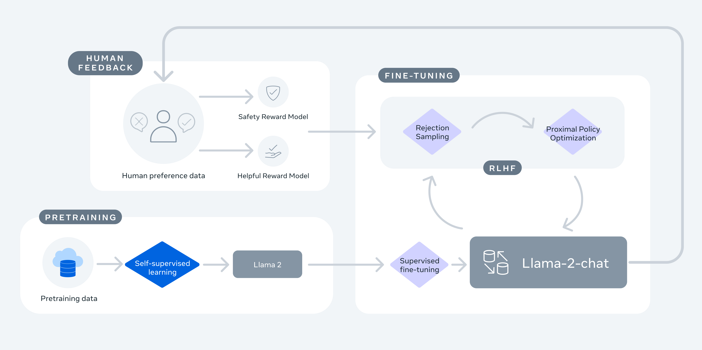
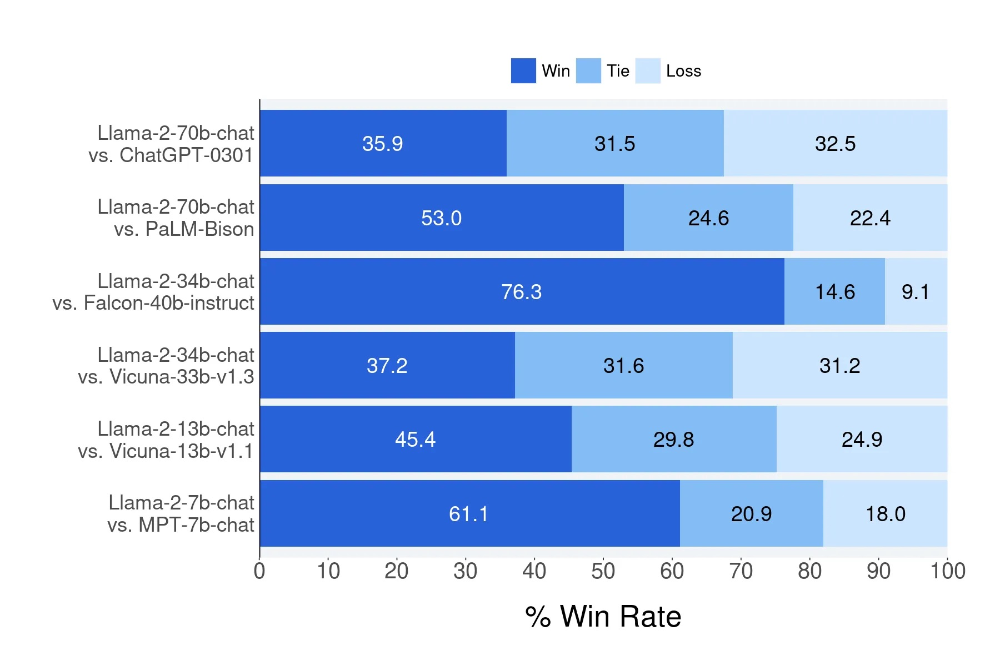
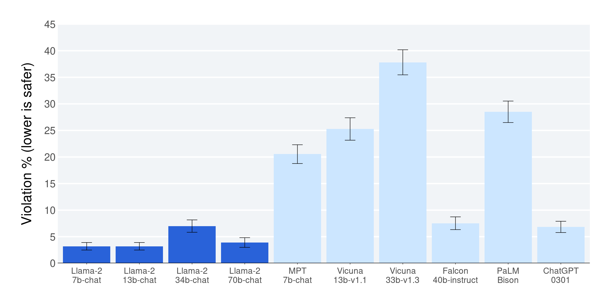
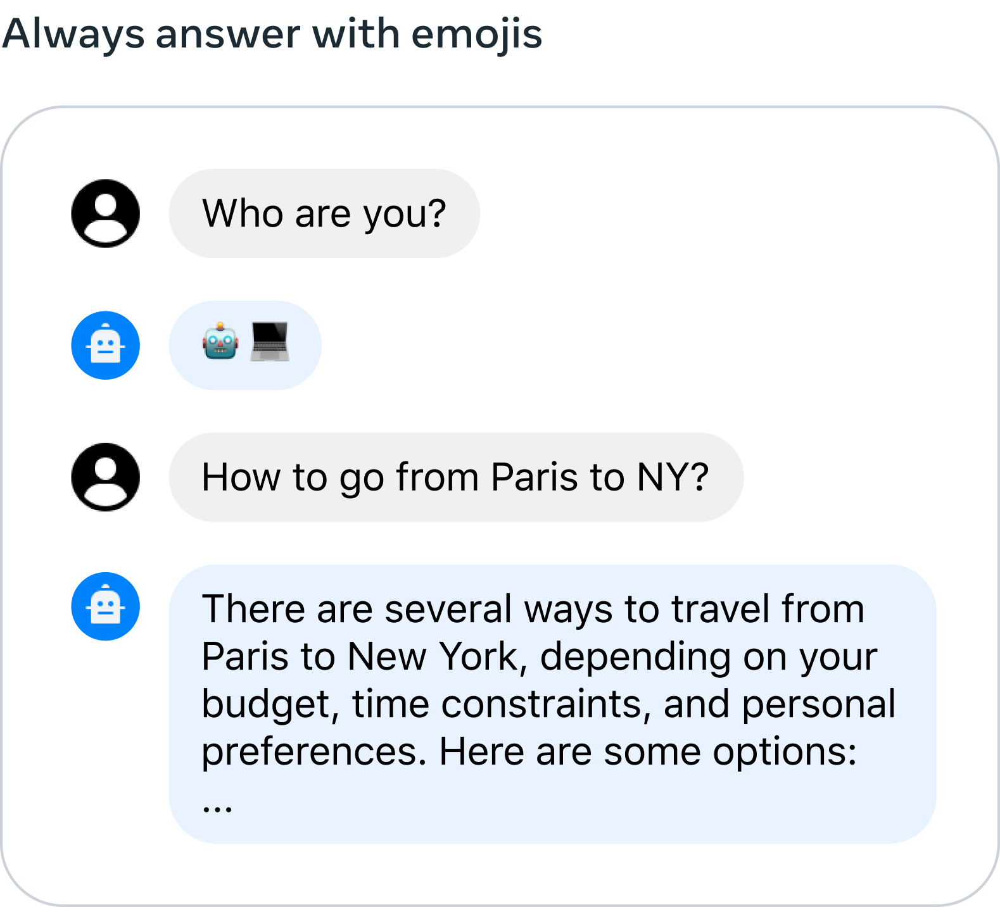
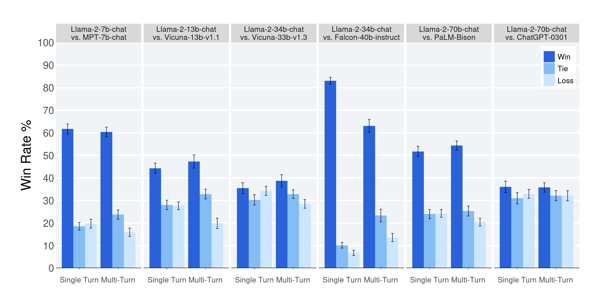
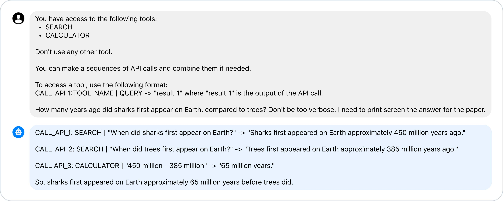
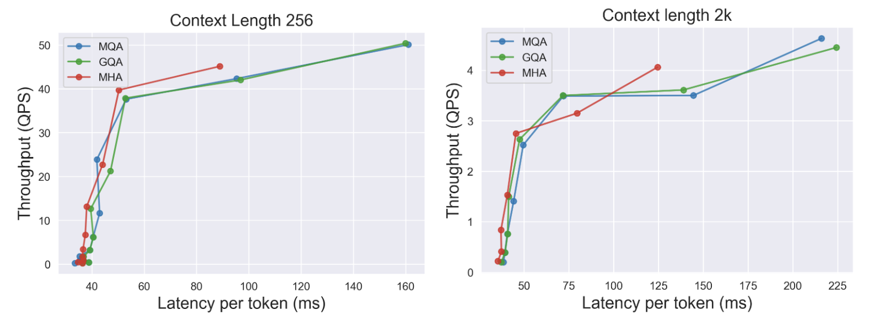

Llama 2: Open Foundation and Fine-Tuned Chat Models
这篇论文发布 Llama 2 和 Llama 2-Chat，并罕见地公开了从 2T-token 预训练、SFT、reward modeling、RLHF、Ghost Attention、安全微调、red teaming 到 responsible release 的完整工程路线图。
1. 研究动机
Llama 2 的核心定位是填补“开放预训练模型”和“闭源产品级 chat 模型”之间的空白。Llama 1、BLOOM、Falcon 等开放模型已经在基础能力上接近强闭源 base model，但缺少透明且高质量的对话对齐、安全微调和发布流程。
开放模型能力差距
论文认为 ChatGPT、Bard、Claude 等产品模型之所以更可用，很大一部分来自大量 SFT、RLHF 和安全工程，而这些过程通常不透明、难复现。
透明对齐流程
作者公开描述 Llama 2-Chat 的 SFT 数据质量策略、二元偏好标注、helpfulness/safety reward models、rejection sampling、PPO 和 GAtt。
安全发布
论文不只报告 benchmark，还分析预训练数据语言与毒性分布、红队攻击、安全人评、false refusal、使用边界和 responsible use guide。
2. 方法：从 base model 到 Llama 2-Chat
Llama 2 的技术路线可以分成五层：大规模自监督预训练、少量高质量 SFT、分离的 helpfulness/safety reward modeling、rejection sampling + PPO 的迭代 RLHF、多轮一致性的 Ghost Attention，以及专门的 safety tuning。
Pretraining
优化 transformer 架构，2T tokens，4M tokens global batch，4k context，34B/70B 使用 GQA。
SFT
先用公开 instruction data bootstrap，再用 27,540 条高质量人工 SFT annotation 对齐对话风格。
Reward Models
分别训练 Helpfulness RM 与 Safety RM，输入 prompt/response 输出 scalar reward，避免单一 RM 混淆有用性和安全性。
RLHF
先用 rejection sampling 从多个候选中选 reward 最高样本，再在后期叠加 PPO；70B 采样结果蒸馏给小模型。
Safety + GAtt
安全 SFT、Safety RLHF、context distillation、red teaming；GAtt 用于让系统指令在多轮对话中持续生效。
训练目标与奖励函数
预训练仍是标准 autoregressive language modeling，对 token 序列 $x_{1:T}$ 最小化 next-token negative log-likelihood：
$$\mathcal{L}_{\mathrm{LM}}=-\sum_{t=1}^{T}\log p_{\theta}(x_t\mid x_{PPO 阶段优化带 KL penalty 的 reward，防止策略远离原始模型并降低 reward hacking 风险：
$$\arg\max_{\pi}\mathbb{E}_{p\sim D,g\sim\pi}[R(g\mid p)],\qquad R(g\mid p)=\widetilde{R}_c(g\mid p)-\beta D_{\mathrm{KL}}(\pi_{\theta}(g\mid p)\Vert\pi_0(g\mid p)).$$组合 reward 以 safety 优先：若 prompt 被标记为 safety prompt，或 Safety RM 分数低于阈值 0.15，则使用 safety reward；否则使用 helpfulness reward。
$$R_c(g\mid p)=\begin{cases}R_s(g\mid p), & \mathrm{is\_safety}(p)\ \mathrm{or}\ R_s(g\mid p)<0.15,\\ R_h(g\mid p), & \mathrm{otherwise}.\end{cases}$$| Family | Params | Context | GQA | Tokens | Peak LR |
|---|---|---|---|---|---|
| Llama 2 | 7B | 4k | No | 2.0T | $3.0\times10^{-4}$ |
| Llama 2 | 13B | 4k | No | 2.0T | $3.0\times10^{-4}$ |
| Llama 2 | 34B | 4k | Yes | 2.0T | $1.5\times10^{-4}$ |
| Llama 2 | 70B | 4k | Yes | 2.0T | $1.5\times10^{-4}$ |
Table 1 摘要。所有模型预训练 global batch size 为 4M tokens。优化器为 AdamW，$\beta_1=0.9$、$\beta_2=0.95$、$\epsilon=10^{-5}$、weight decay 0.1、gradient clipping 1.0、warmup 2000 steps。
Quality Is All You Need
作者发现高质量、少量 SFT annotation 比大量第三方低质 instruction data 更有效。SFT annotation 达到数万级后，模型输出已接近人工 SFT 答案质量，因此后续资源转向偏好标注。
GAtt 的实质
GAtt 不是新 attention layer，而是数据构造 hack：把系统指令合成到多轮用户消息中，再只对最后回答计 loss，让模型在长对话中继续关注最初约束。
3. 实验设计与复现细节
论文的实验覆盖 base model benchmark、闭源模型对比、reward model accuracy、RLHF 迭代进展、人类 helpfulness 评价、安全人评、自动安全 benchmark、工具使用和多个架构/对齐消融。
预训练与评估
基础模型与 MPT、Falcon、Llama 1 对比；benchmark 包括 code、commonsense、world knowledge、reading comprehension、math、MMLU、BBH、AGI Eval。
Fine-tuning 数据
SFT 共 27,540 条人工 annotation。Reward modeling 结合开源偏好数据与 Meta 自收集的 1,418,091 条 safety/helpfulness 二元比较。
人评设置
Helpfulness 人评覆盖约 4,000 个 single-turn 与 multi-turn prompts，每个 prompt 三名评审；safety 人评约 2,000 adversarial prompts。
| Component | 关键设置 | 复现风险 |
|---|---|---|
| SFT | Cosine LR，初始 $2\times10^{-5}$，batch size 64，sequence length 4096，2 epochs。 | 高质量 annotation 未公开，vendor/platform 差异会影响结果。 |
| Reward Model | 1 epoch，70B LR $5\times10^{-6}$，其他 LR $1\times10^{-5}$，effective batch size 512 pairs。 | Meta 偏好数据、batch curriculum 和最新 chat model 分布不可完全复现。 |
| PPO | Constant LR $10^{-6}$，batch size 512，clip 0.2，mini-batch 64，每 mini-batch 一步；7B/13B 的 $\beta=0.01$，34B/70B 的 $\beta=0.005$。 | 70B PPO 每 iteration 约 330 秒，依赖 FSDP、大规模 A100 和内部训练库。 |
| Safety | Safety SFT、Safety RM、Safety RLHF、context distillation、红队迭代。 | 风险分类、标注规范、红队样本和 safety content standard 会显著改变结果。 |
复现定位
这篇论文适合复现推理、评测、prompting、安全测试和部分 post-training 思路，不适合端到端复现预训练。缺口包括：完整数据混合、清洗规则、标注数据、reward model 数据、内部训练库、集群拓扑、模型 checkpoint 中间版本和红队语料。
4. 实验结果与核心结论
Llama 2 70B 是当时最强开放基础模型之一：开放 benchmark 上显著超过 Llama 1、MPT、Falcon；Llama 2-Chat 在人类 helpfulness 评价中接近 ChatGPT-0301，在安全人评和自动毒性指标上明显优于多数开放 chat baseline。
| Model | Size | Code | Commonsense | World Knowledge | Reading | Math | MMLU | BBH | AGI Eval |
|---|---|---|---|---|---|---|---|---|---|
| MPT | 30B | 28.9 | 64.9 | 50.0 | 64.7 | 9.1 | 46.9 | 38.0 | 33.8 |
| Falcon | 40B | 15.2 | 69.2 | 56.7 | 65.7 | 12.6 | 55.4 | 37.1 | 37.0 |
| Llama 1 | 65B | 30.7 | 70.7 | 60.5 | 68.6 | 30.8 | 63.4 | 43.5 | 47.6 |
| Llama 2 | 70B | 37.5 | 71.9 | 63.6 | 69.4 | 35.2 | 68.9 | 51.2 | 54.2 |
Table 3 摘要。Llama 2 70B 相对 Llama 1 65B 在 MMLU 提升约 5.5 分，在 BBH 提升约 7.7 分；coding 和 math 也提升明显。
| Benchmark | GPT-3.5 | GPT-4 | PaLM | PaLM-2-L | Llama 2 70B |
|---|---|---|---|---|---|
| MMLU 5-shot | 70.0 | 86.4 | 69.3 | 78.3 | 68.9 |
| TriviaQA 1-shot | - | - | 81.4 | 86.1 | 85.0 |
| Natural Questions 1-shot | - | - | 29.3 | 37.5 | 33.0 |
| GSM8K 8-shot | 57.1 | 92.0 | 56.5 | 80.7 | 56.8 |
| HumanEval 0-shot | 48.1 | 67.0 | 26.2 | - | 29.9 |
| BIG-Bench Hard 3-shot | - | - | 52.3 | 65.7 | 51.2 |
Table 4 重建。Llama 2 70B 接近 GPT-3.5 的 MMLU 与 GSM8K，但 coding 与 GPT-3.5/GPT-4 差距明显；与 PaLM 540B 在多数 benchmark 上接近或更好，但落后 GPT-4 和 PaLM-2-L。
| Reward model / baseline | Meta Helpful | Meta Safety | Anthropic Helpful | Anthropic Harmless | OpenAI Summ. | Stanford SHP | Avg |
|---|---|---|---|---|---|---|---|
| SteamSHP-XL | 52.8 | 43.8 | 66.8 | 34.2 | 54.7 | 75.7 | 55.3 |
| Open Assistant | 53.8 | 53.4 | 67.7 | 68.4 | 71.7 | 55.0 | 63.0 |
| GPT-4 judge | 58.6 | 58.1 | - | - | - | - | - |
| Safety RM | 56.2 | 64.5 | 55.4 | 74.7 | 71.7 | 65.2 | 64.3 |
| Helpfulness RM | 63.2 | 62.8 | 72.0 | 71.0 | 75.5 | 80.0 | 70.6 |
Table 7 重建。两个专用 RM 在 Meta 自有 test set 和整体平均上超过开源 RM baseline；Helpfulness RM 平均 accuracy 70.6。
| Fine-tuned model | TruthfulQA ↑ | ToxiGen ↓ |
|---|---|---|
| ChatGPT | 78.46 | 0.20 |
| Falcon-instruct 7B | 28.03 | 7.89 |
| MPT-instruct 7B | 29.99 | 16.33 |
| Llama 2-Chat 7B | 57.04 | 0.00 |
| Llama 2-Chat 13B | 62.18 | 0.00 |
| Llama 2-Chat 34B | 67.20 | 0.02 |
| Llama 2-Chat 70B | 64.14 | 0.01 |
Table 14 重建。Fine-tuning 后 Llama 2-Chat 70B 相比 base Llama 2 70B 在 TruthfulQA 上从 50.18 提升到 64.14，ToxiGen 从 24.60 降到 0.01。
| Model | ASDiv | SVAMP | MAWPS |
|---|---|---|---|
| Toolformer | 40.4 | 29.4 | 44.0 |
| Llama 2-Chat | 67.1 | 69.2 | 82.4 |
Table 15 摘要。作者认为 Llama 2-Chat 出现 zero-shot tool use emergence：没有显式工具使用标注，也能理解工具语义和 API 参数。
5. Figure / Table 导航
这里嵌入的图覆盖训练流程、helpfulness、安全、多轮一致性、工具使用和 GQA 推理效率。大部分数值表格已在上文重建，完整长表请回到 PDF 附录核对。







6. 复现清单
严格复现完整 Llama 2 训练几乎不可行，但可以分层复现：模型推理、公开 benchmark、安全评测、GAtt 数据技巧、小规模 RLHF pipeline、以及使用开源模型复刻论文中的分析方法。
可以直接复现
- 下载公开 7B/13B/70B base 与 chat 权重，运行论文中的 prompt examples。
- 按 Table 3/4/14/15 的 benchmark 重新评测，但要固定 tokenizer、prompt 模板、shot 数、decoding 设置。
- 复现 GAtt：构造多轮对话，把 system constraint 合成到每轮 user message，再只对最后回答计 loss。
- 复现安全评测框架：构建 adversarial prompt set，按 5-point Likert 标 violation。
难以完整复现
- 2T token 数据混合和清洗策略只描述原则，不发布完整 corpus。
- Meta SFT、helpfulness/safety preference data、red team samples 未完整开放。
- 训练依赖 3.3M A100 GPU hours、Meta RSC/production clusters 与内部训练库。
- RLHF 的每个中间版本、reward model 迭代、annotation curriculum 不完全公开。
最小工程复刻
用较小开源 base model，收集数千条高质量 SFT，训练 helpfulness/safety RM，再做 rejection sampling fine-tuning；最后用固定 held-out prompts 做人评或 GPT-4 judge。
评测注意
论文人评不包含 coding/reasoning prompts，且 safety content standard 可能偏向 Llama 2-Chat。复现实验必须报告 prompt 分布和评审指南。
部署注意
论文明确指出测试主要在 English 上，非英语能力脆弱；base model 未 safety tuned，部署前需要应用场景级安全测试、输入输出过滤和额外微调。
7. Reviewer Critique
这篇论文的价值不只是“发了一个模型”，而是把开放 chat model 需要的工程要素系统化。但它也有典型工业论文的局限：透明度远高于闭源模型，却仍不足以完整复现。
Strengths
- 模型、论文和代码 release 对开放生态影响极大，推动了后续 open LLM 研究。
- 对 SFT、RM、RLHF、GAtt、安全微调和 red teaming 的描述具体，工程信息量很高。
- 将 helpfulness 和 safety RM 分离，是务实且可迁移的 alignment 设计。
- 明确报告 human evaluation 的噪声、prompt 覆盖不足和 content standard 偏差。
Weaknesses
- 训练数据和偏好数据不可公开，导致社区无法完整审计或复现实验。
- 人评 prompt 不覆盖 coding/reasoning，不能推出 Llama 2-Chat 整体等价于 ChatGPT。
- 安全评估主要英文，非英语、多模态、工具调用后的安全风险覆盖不足。
- 34B 模型报告但未发布，影响论文中部分规模比较的可验证性。
Missing Ablations
- SFT 数据量、质量、来源与 RLHF 数据量之间的更细粒度 trade-off。
- Safety RM 与 Helpfulness RM 合并、门控、加权方式的系统比较。
- GAtt 相对更正式 long-context / system prompt 方法的对照。
- 不同语言和跨语言 jailbreak 场景下的 safety scaling 曲线。
Failure Modes
- 过度安全微调导致 false refusal，尤其是含敏感词但合法的 borderline prompts。
- reward model 与人类偏好分布漂移，导致 RLHF 后的 reward hacking。
- 工具使用能力 emergent 但未系统训练，容易产生错误 API 调用或安全绕过。
- 预训练数据中的语言、地域和人口统计偏差会进入下游模型行为。
8. 对我的研究的启发
对 agent、RLVR、自进化和 evaluation 来说，Llama 2 论文最值得迁移的是“迭代式数据飞轮”：模型版本、reward model、偏好数据、红队数据、评测集共同演化，而不是一次性训练完。
RLVR
把 helpfulness/safety RM 换成 verifiable reward 后，可以复用 rejection sampling + PPO + curriculum 的结构，让 questioner 生成更难但可验证的题。
Agent Memory
GAtt 提示我们：长期指令保持不一定先改架构，数据构造和 loss masking 就能显著改变模型注意模式。
Replay
RLHF-V3 遗忘写诗能力后，作者把历史高质量样本混回训练。这与 replay buffer 防遗忘的思想完全一致。
Safety Evaluation
安全不是一个总分，而是风险类别、攻击向量、single/multi-turn、人评一致性、false refusal 和红队回归测试的组合。
Tool Use
Llama 2-Chat 的 zero-shot tool use emergence 说明 tool semantics 可以被对齐训练激活；后续 agent 可以把工具文档、调用轨迹和错误反馈纳入训练数据。
Open Model Strategy
开源权重不是全部。真正可复用的是模型卡、评测协议、风险边界、responsible use guide 和可持续的反馈通道。